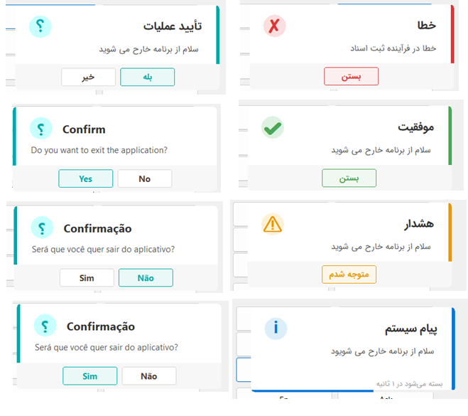

ModernDialogs4D
A drop‑in replacement for MessageDlg and ShowMessage — borderless, rounded, RTL‑aware message dialogs and auto‑dismissing notifications for Delphi VCL applications.

Key Features
Modern UI Design
Borderless forms with rounded corners, drop shadows, and flat buttons.
Full RTL & LTR Support
Intelligent layout for right‑to‑left (Persian/Arabic) and left‑to‑right languages.
Notification Mode
Auto‑dismissing messages with a countdown timer and progress bar.
Message Types
Info, Success, Warning, Error, and Question/Confirm.
Full Customization
Font, background color, accent color, icon colors, button texts, and more.
Built‑in Localization
Ready‑to‑use translations, listed below.
dlPersiandlEnglishdlArabicdlPortugueseBRdlCustomInstallation & Usage
The uModernDialogs.pas unit is part of the Delphi package ModernDialogs4D, and is meant to be used by installing that package in the Delphi IDE (rather than adding the .pas file directly to a project).
1. Installing the package
- Open the
ModernDialogs4D.dpkpackage project (which containsuModernDialogs.pas) in the Delphi IDE. - Right‑click the package and choose Install so the
TModernDialogscomponent is added to the Component Palette. - Add the package's output folder (
.bpl/.dcp) to Delphi's Library Path for use in other projects. - The
TModernDialogscomponent is now visible in the palette and can be dragged onto a form.
ModernDialogs4D as a Requires entry, or link it statically.2. Using it in code
- Add
uModernDialogsto theusesclause. - Create a
TModernDialogsinstance — drag from the palette, or dynamically in code. - Call
Info,Success,Warning,Error,Confirm,ShowNotification, or the general‑purposeAsk.
uses
uModernDialogs;
var
Dlg: TModernDialogs;
begin
Dlg := TModernDialogs.Create(nil);
try
Dlg.Language := dlPersian; // sets language, switches to RTL automatically
Dlg.Font.Name := 'Segoe UI';
Dlg.Font.Size := 10;
Dlg.Info('The operation completed successfully.');
Dlg.Success('The file was saved successfully.');
Dlg.Warning('Disk space is running low.');
Dlg.Error('Could not connect to the server.');
if Dlg.Confirm('Are you sure you want to delete this item?') then
// proceed with deletion
Dlg.ShowNotification('Changes saved.', 3000);
finally
Dlg.Free;
end;
end;Since TModernDialogs descends from TComponent, one instance can be kept alive on a form and reused rather than created/freed each time.
Data Types
TAppMessageType
Determines the accent color, badge color, and icon of a dialog.
| Value | Meaning |
|---|---|
mtInfo | Informational — orange, i icon |
mtSuccess | Success — green, ✔ icon |
mtWarning | Warning — blue, ⚠ icon |
mtError | Error — purple/blue, ✘ icon |
mtQuestion | Question — yellow, ؟ icon |
TDialogLanguage
| Value | Language | Direction |
|---|---|---|
dlEnglish | English (default) | LTR |
dlPortugueseBR | Brazilian Portuguese | LTR |
dlPersian | Persian | RTL |
dlArabic | Arabic | RTL |
dlCustom | Custom (empty strings) | LTR |
Changing Language (except to dlCustom) auto‑updates BiDiMode. Setting BiDiMode directly switches Language to dlCustom.
TDialogTranslation
Record holding all translatable strings: TitleInfo, TitleSuccess, TitleWarning, TitleError, TitleConfirm, TitleNotify, BtnOk, BtnClose, BtnYes, BtnNo, CountdownFmt, BiDiMode. The constant array TRANSLATIONS holds values per language.
TAppMessageItemStyle
Visual style of a message type (descends from TPersistent, editable in the Object Inspector).
| Property | Type | Description |
|---|---|---|
AccentColor | TColor | Side accent bar color |
BadgeColor | TColor | Badge circle background |
IconChar | string | Glyph shown in the badge |
IconColor | TColor | Icon glyph color |
Each of the five message types has its own style instance, preset in the TModernDialogs constructor and editable at design or run time.
TModernDialogs — the main class
Published properties
| Property | Type | Default | Description |
|---|---|---|---|
Font | TFont | Segoe UI, 9 | Base font for all dialogs |
BackgroundColor | TColor | clWhite | Dialog body background |
Language | TDialogLanguage | dlEnglish | Language of default texts |
BiDiMode | TBiDiMode | bdLeftToRight | Layout direction |
StyleInfo / StyleSuccess / StyleWarning / StyleError / StyleQuestion | TAppMessageItemStyle | — | Per‑type visual style |
Methods
The core method. Shows a modal dialog with a title, message, and custom buttons.
Returns: the clicked button's index (0‑based). The first button is styled as primary and gets initial focus.
case Dlg.Ask('Choose', 'Which option do you want?', mtQuestion, ['Yes', 'No', 'Cancel']) of
0: ShowMessage('Yes was selected');
1: ShowMessage('No was selected');
2: ShowMessage('Cancelled');
end;Info dialog with a single OK button. Empty ATitle falls back to TitleInfo.
Success dialog with a single Close button.
Warning dialog with a single OK button.
Error dialog with a single Close button.
Returns: True when the user clicks "Yes" (the first button), False otherwise.
Button‑less notification that auto‑closes after TimeoutMs, with a progress bar and countdown text (CountdownFmt).
Returns the translation record for the current Language.
Returns the style object for the given message type.
Internal (implementation) classes
Not normally called directly by consumers of the unit:
- TFlatButton (
TCustomControl) — a custom flat button with hover/pressed/focus effects, used in the dialog footer. - TfrmModernDialog (
TForm) — a borderless (bsNone) form with rounded corners and a drop shadow that forms the dialog body. ItsExecutemethod handles layout, text measurement, positioning, and modal display.
Helper functions: AlterColor (lighten/darken a color for hover/border effects) and CalcTextHeight (measures multi‑line text to auto‑size the dialog).
Notes & Limitations
- VCL‑based and Windows‑only (depends on
Winapi.Windows). - Dialogs are shown modally (
ShowModal) exceptShowNotification, which self‑closes. - Height auto‑sizes to the message; width is fixed at 360px.
- For other languages, set
Language := dlCustomand fill inTRANSLATIONS[dlCustom], or callAskdirectly with custom text. - Colors are hex RGB literals in code; change the palette via the
StyleXXXproperties. - Setting
LanguagetodlPersianordlArabicautomatically mirrors the layout to RTL.
Full Example
procedure TForm1.btnSaveClick(Sender: TObject);
var
Dlg: TModernDialogs;
begin
Dlg := TModernDialogs.Create(Self);
try
Dlg.Language := dlEnglish;
Dlg.Font.Name := 'Segoe UI';
Dlg.Font.Size := 10;
if not Dlg.Confirm('Do you want to save the changes?') then
Exit;
try
// ... save operation ...
Dlg.ShowNotification('Changes saved successfully.', 2500);
except
on E: Exception do
Dlg.Error('Error while saving: ' + E.Message);
end;
finally
Dlg.Free;
end;
end;